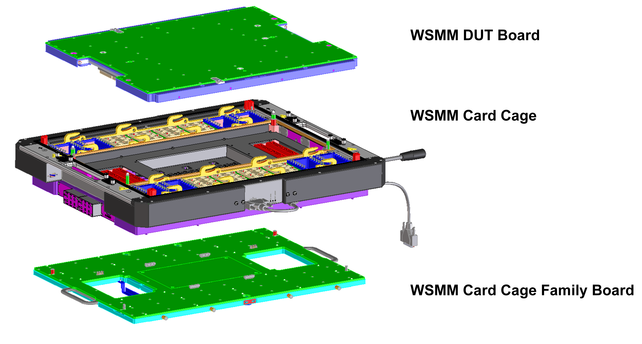
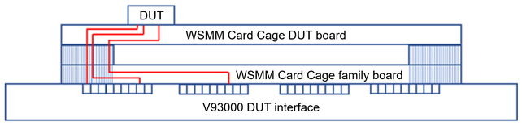

WSMM Family Board E8027FAA
The family board of the Wave Scale Millimeter (WSMM) solution maps custom configured DUT Scale interface resources to the pogo blocks of the WSMM Card Cage DUT interface. The family board is integrated into the WSMM card cage (WSMM Card Cage).

Compared to the DUT Scale interface, the pogo block groups and RF ports of the WSMM Card Cage are shifted outwards providing more application space in the center of the board.

The inner four groups of the WSMM Card Cage DUT Interface are reserved for the RF ports of the Remote Mixing Modules. The family board must therefore route the resources of the DUT scale interface to the outer four groups 4, 5, 6, and 7 of the WSMM Card Cage DUT interface.
Pogo block mapping
The WSMM Family board is adapted to a customer-specific configuration of the DUT Scale interface. For the assignment from the pogo blocks of the DUT Scale interface to the pogo blocks of the WSMM Card Cage DUT interface, refer to WSMM Family Board E8027FAA pogo block mapping.
Pogo pin mapping
The table in WSMM Family Board E8027FAA pogo pin mapping provides detailed information how the individual pogo pins of the DUT Scale interface are mapped to the pogo pins of the WSMM Card Cage DUT interface.
Functional changes
- Introduced in SmarTest 8.2.5